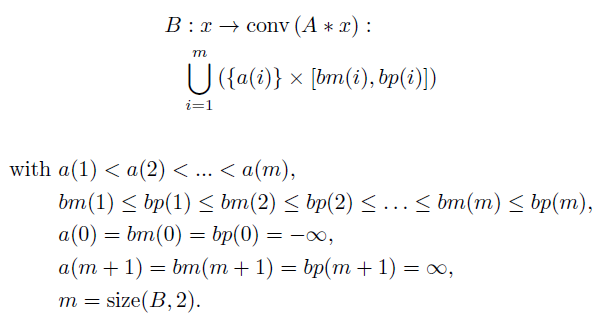
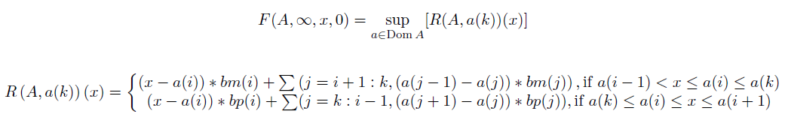

Compute the PLQ Fitzpatrick function of infinite order of an operator on an (x,0) grid using Rockafellar functions.
F = plq_fitzinf0(B)
matrix. A matrix [a;bm;bp] where a, bm (b-), and bp (b+) are row vectors as defined below.
The infinite-order, PLQ Fitzpatrick function of the operator A.
Compute the PLQ Fitzpatrick function of infinite order of an operator A on a grid (x,0) as a maximum over Rockafellar functions, where B is defined as:

This function computes the PLQ Fitzpatrick function in optimal linear time by iterating only over i and using an explicit formula to calculate the maximum over k at each step. See also plq_fitzinf0_direct, which is an unoptimized version of plq_fitzinf0.

a = -4:4; bm = [-15,-13,-10,-7,-6,-4,0.5,1,1]; bp = [-13,-11,- 8,-6,-5, 0, 1,1,2]; B = [a;bm;bp]; x = -6:6; F = plq_fitzinf0(B), plq_eval(F, x), |
Bryan Gardiner, University of British Columbia, BC, Canada